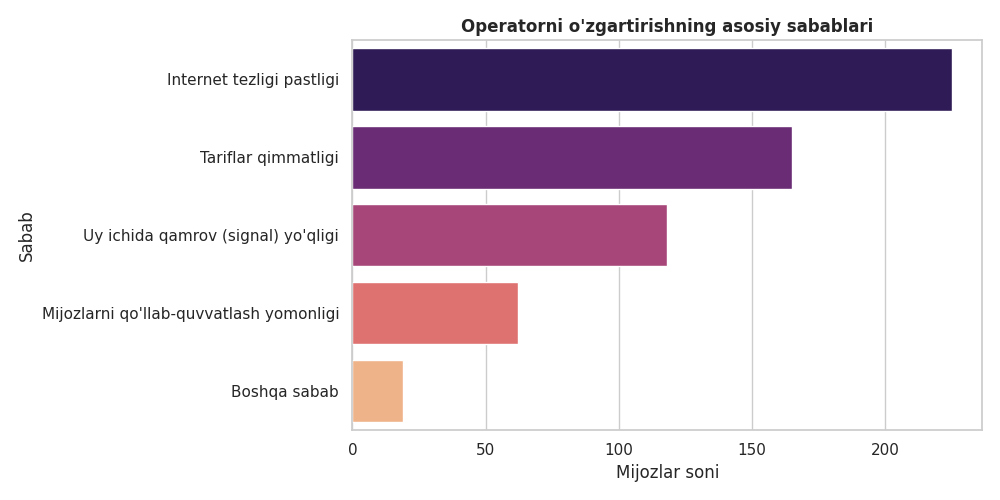
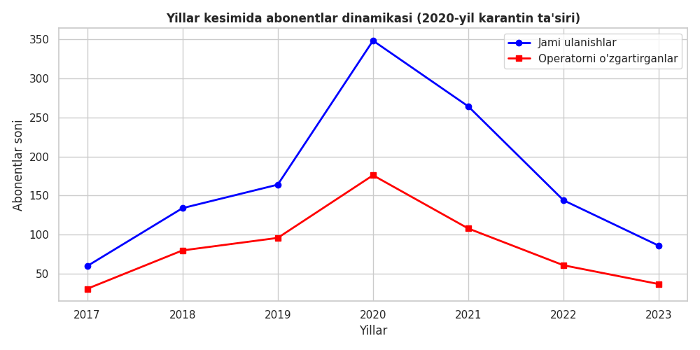

1,200
Tahlil qilingan Abonentlar
49.08%
Umumiy Churn (Oqim) Darajasi
34 Mbps
O'rtacha Internet Tezligi
2.66 / 5
Call-Center O'rtacha Bahosi
End-to-End Tahlil Jarayoni
1. Excel
1,200 ta qatordan iborat xom ma'lumotlar tozalandi va tahlil uchun tayyorlandi.
2. PostgreSQL (SQL)
Ma'lumotlar bazaga yuklanib (`\copy`), operatorlar kesimida agregatsiya so'rovlari bajarildi.
3. Python & Machine Learning
Pandas, Seaborn yordamida EDA o'tkazildi va Random Forest modeli qurildi.
4. Power BI Desktop
DAX formulalari yordamida 2 sahifali interaktiv va professional boshqaruv paneli yaratildi.
Operatorlar Kesimida Churn Ko'rsatkichlari
Mobiuz
52.80%
Eng yuqori yo'qotish
Uzmobile
52.15%
Yuqori oqim darajasi
Beeline
48.21%
Barqarorroq ko'rsatkich
Ucell
45.21%
Eng past yo'qotish ulushi
Tahliliy Grafiklar Galereyasi (Python & Visualizations)
Loyih davomida generatsiya qilingan va ma'lumotlarni to'liq ochib beruvchi asosiy grafiklar:
.png)
Operatorlar bo'yicha Churn Taqsimoti

Operatorni O'zgartirish Sabablari

2017–2023 Yillar Kesimida Dinamika
Texnik Qism: SQL So'rovlari va Model
SELECT operator, COUNT(*) AS jami_mijoz,
SUM(CASE WHEN operatorni_ozgartirgan = 'Ha' THEN 1 ELSE 0 END) AS ketganlar
FROM telecom_data GROUP BY operator;
SUM(CASE WHEN operatorni_ozgartirgan = 'Ha' THEN 1 ELSE 0 END) AS ketganlar
FROM telecom_data GROUP BY operator;
Chuqur Tahliliy Xulosalar
- Internet Tezligi Ta'siri: Ketgan abonentlarda tezlik ~26 Mbps, qolganlarda ~42 Mbps ni tashkil etgan.
- Asosiy Sabablar: Internet tezligi pastligi, tariflar qimmatligi va uy ichida qamrov yo'qligi.
- 2020-yilgi Karantin: Masofaviy ishlash va o'qish sababli tarmoq yuklamasi oshib, oqim cho'qqiga chiqqan.
Foydalanilgan Texnologiyalar
Excel
PostgreSQL (SQL)
Python
Power BI